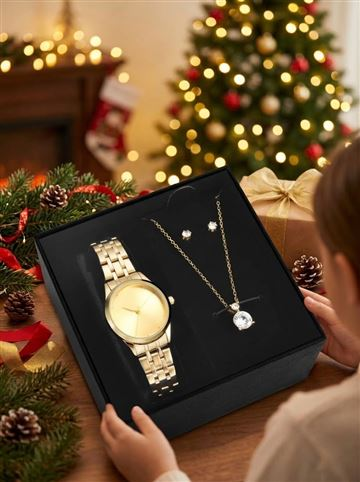
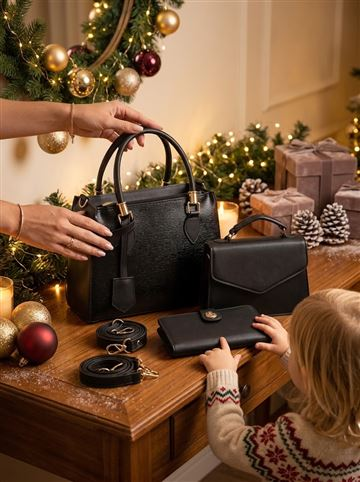
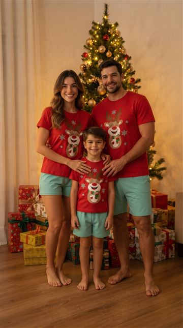

Presente de Natal pra mãe: ideias que ela vai usar
#publi — Os botões são links de afiliado do Mercado Livre: posso ganhar uma comissão, sem custo extra pra você. Preço e prazo mudam: confira no anúncio.
Presente de mãe precisa ser bonito e útil. Separei ideias que vendem muito no Mercado Livre e que dá pra entregar já com cara de presente.
Resumo rápido:
⌚ Mais completo: kit relógio + colar + brincos.
👜 Pra usar todo dia: kit bolsa + carteira.
📸 Pra família toda: pijama de Natal combinando.
⌚ Mais completo: kit relógio + colar + brincos.
👜 Pra usar todo dia: kit bolsa + carteira.
📸 Pra família toda: pijama de Natal combinando.
As ideias

Kit relógio + colar + brincos dourado
Já vem pronto pra presentear, nota 4,8.
Ver preço no Mercado Livre
Kit bolsa transversal + bolsa pequena + carteira
Três peças combinando, nota 4,7.
Ver preço no Mercado Livre

Kit pijama família de Natal
Pai, mãe e filho combinando: a foto de Natal do ano. Tamanhos informados no chat depois da compra.
Ver preço no Mercado LivrePerguntas frequentes
O que dar de presente de Natal pra mãe?
Kit de relógio e joias, bolsa com carteira e pijama de família estão entre os mais procurados.
Chega antes do Natal?
Prefira os anúncios FULL e confira o prazo pro seu CEP.
Leia também
- Árvore de Natal completa barata: 3 opções que chegam rápido
- Presentes de Natal até R$ 50: 8 ideias que todo mundo gosta
- Presente de amigo secreto barato: ideias de R$ 20 a R$ 50
Mais achadinhos na nossa página de ofertas.